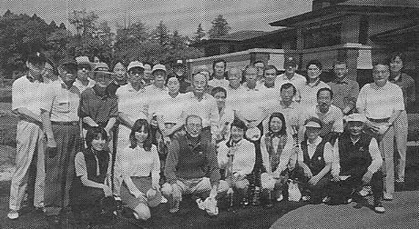

初夏の爽やかな季節に、東京玉翠会も第１９回総会を迎えて、その集いもますます盛大な趣はご同慶の至りに存じます。私どものゴルフ同好会も回を重ねるごとに続々と参加者が加わりまして、平成１３年５月１３日（日）の第１４回コンペには、９組３４人の同好者が千葉県大網白里町の「季美の森ゴルフ倶楽部」に参集致しました。
今回の幹事は、昭和５２年卒業の折目尚也、田中信重、神崎俊の諸君で、企画・連絡・設営などを分担して、手際よく運営され、その上、五月晴れの好天にも恵まれまして、お陰様で楽しいプレーを満喫することができました。
最長老は、遂に大正１５年生まれ、昭和１９年卒業の小生にお鉢が回り、同窓の藤本弘君と二人で、息子や娘と同じ若い人達と楽しい一日を過ごさせて戴きました。
そもそも、この会は親子ほどの老若、机を並べた男女が、時代を飛び越えて共に集うところに意義があるものと思います。
松本先輩、山田先輩、辻先輩、中村先輩の方々のお元気な姿を再ぴ拝見致したいものと祈っております。
今回も６名の女性の参加を得まして、大会に華を添えて載きました。
男性顔負けの堂々たるスコアで、とくに常連の小島豊子さんは、男性と同じティーを使ってしばしばオーバードライブされ、特に１７番ショートホールでは、あわやホールインワンかというスーパーショットで軽々とバーディをとられました。
女性のベストグロスは高田トシ子さんで、９２で第５位に入られました。
男性のベストグロスは、シングルの名に恥じず折日尚也君が８２で前回に続いて栄冠に輝きました。
打越 祐(昭和19年卒・高中)